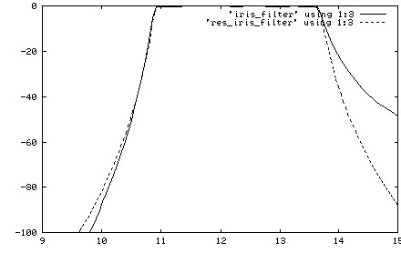
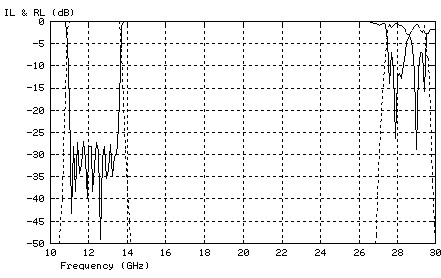

Figure 1: Transmission response of two 11-pole
chebychev filters using H-plane and resonant irises.

Figure 2: High spectrum isolation of a Ku-band 11-pole resonant iris filter.
|
Where the resonant iris filter is better than a regular iris filter
Any filter built from H-plane irises or posts shows less
isolation on right roll-off than on left side.
This is a characteristic of a regular iris or post filter
which much reduces its trade-off value. The resonant iris
filter can provide a symmetric frequency response (see Figure 1) as
well as with more lower isolation or more upper isolation. This
property of response is adjustable by distance between irises.
Also the length of a resonant iris filter can be twice smaller
than the appropriate iris or post filter providing the same
isolation and bandwidth. For example, the resonant iris filter
with response shown on Figure 1 is not longer than 2 inches but
its regular iris analog is 5.5 inches long, though the both
filters provide 11-pole frequency response.
|